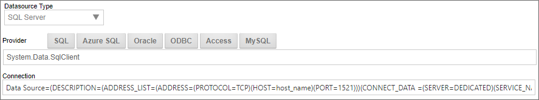
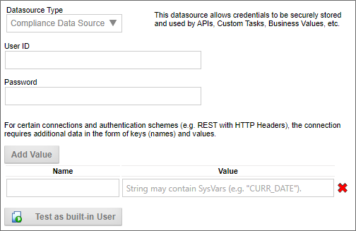
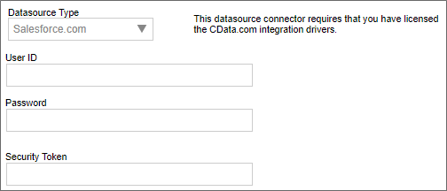
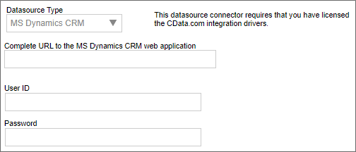

Due to a bug in the newer MySQL .NET drivers, the MySQL 6.9.12 or older driver must be used. This is a bug introduced in the MySQL .NET driver version 6.10 and higher (MySQL Bug #89159).
Due to a bug in the newer MySQL .NET drivers, the MySQL 6.9.12 or older driver must be used. This is a bug introduced in the MySQL .NET driver version 6.10 and higher (MySQL Bug #89159).There are several datasource types you'll commonly use for connections to external data.
SQL Server, Oracle, Postgress SQL, Access, etc, are all server-based database system that use connection strings to access the database server. In most cases, you'll need to configure the following fields to create the database connection to the server:
|
Field |
Description |
|---|---|
|
Provider |
The database provider string |
|
Connection |
The database connection string |

Next to the Provider property, a series of buttons will, when clicked, automatically set the Datasource Type and Provider properties, and supply a sample connection string in the Connection property. You can then edit this sample connection to the correct settings for the database server.
While this is the quickest way of setting up the database connection, you can also manually configure the Database Type, Provider, and Connection string. For more information on database connection strings please refer to connectionstrings.com.
Due to a bug in the newer MySQL .NET drivers, the MySQL 6.9.12 or older driver must be used. This is a bug introduced in the MySQL .NET driver version 6.10 and higher (MySQL Bug #89159).
The Compliance Datasource is available to users of Process Director v5.15 and above. This type isn't a database connector, but, instead, provides a secure storage for User ID (username) and Password attributes for use elsewhere. These stored attributes can be accessed via the SDK API in custom scripts to provide the login information needed to access some external data source. Additionally, the attributes can be accessed in Custom Tasks that require user names and passwords, such as Fill Fields from REST, as well as Business Values, to provide required login information, without providing it in the configuration of the Custom Task or Business Value.

This Datasource enables you to store the attributes securely, separate from the Custom Task or Business Value, to help prevent a compromise of the login data, while still enabling designers to incorporate secure logins in Custom Tasks or Business Values, without having to know the actual login information.
The attributes are not accessible via system variable, for security reasons.
Users of Process Director v5.42 and higher can also add Name/Value pairs to the Datasource, for connections that require additional data in the form of keys (names) and values.
A Test as Built-In User button enables you to provide the credentials of a built-in Process Director user account, then test it to ensure the account works properly.
The OAuth Data Source provides a generic OAuth connector for data sources that use this authentication method.

When using the OAuth Datasource, you must provide the Client Token, Token Secret, and Access Token for the OAuth authentication. Some OAuth systems enable you to dynamically generate access tokens for each connection, so a property named Use Refresh Token to generate Access Tokens on demand will, when checked, replace the Access Token property with a Refresh Token property, which enables the system to pass the refresh token to the OAuth system to dynamically generate a new access token for each connection instance.
Users of Process Director v5.42 and higher can also add Name/Value pairs to the Datasource, for connections that require additional data in the form of keys (names) and values.
Process Director provides connection to two different internal Datasource Types.
 For Cloud customers, access to these internal Datasources may be restricted, requiring BP Logix to create the Datasources for you.
For Cloud customers, access to these internal Datasources may be restricted, requiring BP Logix to create the Datasources for you.
The Internal Database Datasource Type will connect directly to the Process Director database. No other Properties are necessary when using the Internal Database type.
BP Logix does NOT recommend the use of the Internal Database Datasource for anyone but highly experienced SQL database specialists. Its use risks altering the core Process Director database, and if you use it, you do so ENTIRELY at your own risk. Be warned!
When a user attempts to create an Internal Database Datasource, the Datasource Type will default to "Other" if the user doesn't have permission to create an Internal Database connection.
The Internal User Database Datasource Datasource Type grants access to a separate database that's included with Process Director, whose purpose is to store data in SQL format from Excel file imports, or other custom data you might need to use. It contains a few SQL Views that are exposed from the Process Director Database for administration or system management purposes, but is otherwise empty. This Database Type is designed for your use, to store any data you might desire.
Some datasources that connect to external applications such as Salesforce, MS Dynamics, etc., are provided via the oData database connector.


The properties available for these Datasources may vary slightly, as the two examples above show.
CData, the provider of oData connections, has unique license terms for using these connection types. They are, therefore, licensed separately. Customers using Datasources for Salesforce or MS Dynamics should contact customer support to enable these features in their license.
To see more information about different Datasource Types and their configuration, please refer top the following topics: